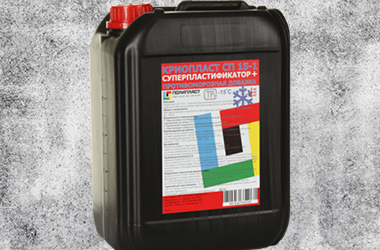

|  | ПЛАСТИФИКАТОР I ГРУППЫ ДЛЯ БЕТОННЫХ И РАСТВОРНЫХ СМЕСЕЙ Используется для производства всех видов бетонов на основе портландцемента. Предотвращает расслоение бетонных смесей даже при больших подвижностях. Предназначен для товарного, сборного и монолитного бетона, железобетона, строительных растворов, для изготовления сборных конструкций средней прочности, приготовления товарных бетонов классов от С12/15 до С30/35 БЕЗОПАСНОСТЬ ТРУДА И ОХРАНА ЗДОРОВЬЯ По воздействию на организм человека относится к малоопасным веществам (IVкл. опасности по ГОСТ 12.1.007-86) |
ДОЗИРОВКА ОТ МАССЫ ЦЕМЕНТА: 0,6 % - 1,2 %. При работе необходимо соблюдать санитарно- гигиенические требования, пользоваться средствами индивидуальной защиты для предотвращения контакта с кожей и глазами Срок хранения - 12мес. с даты изготовления Следует защищать добавку от прямого солнечного света, температура хранения от 0 С до +50 С Является негорючей жидкостью. ПОЗВОЛЯЕТ: Увеличить подвижность бетонной смеси с П1 до П5 и более без потери прочности, Снизижает расход цемента до 10% и воды до 15% повышает начальную и конечную прочность бетона, плотность, морозостойкость, водонепроницаемость и др. свойства бетона. Снижает энергозатраты (при вибрации, ТВО) и трудозатраты при укладке и уплотнении бетонной смеси Не содержит хлоридов, не повышает содержание воздуха в смеси, не изменяет окраску бетона, не создает выцветов, не содержит хлоридов, Может использоваться в армированных и предварительнонапряженных конструкциях Не вызывает коррозии арматуры и бетона
| ПОСТАВЛЯЕТСЯ В 5, 10, 20, 200, 1000 Литровых канистрах |
Цены без НДС: 8,0 р. при покупке менее 25 канистр. |